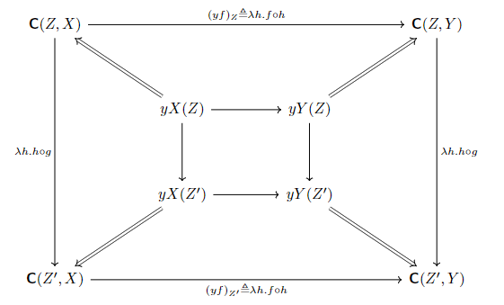

理解，理解，还是要理解。
我们考虑定义一个 Yoneda Functor: y:C→SetCop。给定一个X∈C，那么yX 就是一个Cop→Set 的 functor，定义如下：
yX(YfZ)=C(Y,X)λg.g∘fC(Z,X)
那么对于XfY 是C 中的一个 morphism 的话，yX⇒yY 应该就是一个 natural transformation。
对于ZgZ′∈Cop：

Yoneda Lemma: For each small category C, each object X∈C and each presheaf F∈SetCop, there is a bijection of sets:
ηX,F:SetCop(yX,F)≅F(X)
which is natural in both X and F.
注意，yX,F:Cop→Set 都是 functor，而SetCop(yX,F) 就是这两个 functor 之间的 natural transformation 的集合。而这个集合同构于F(X)。
下面我们试图给出这个同构映射，证明该引理。
给定一个θ:yX⇒F，那么有θX:yX(X)→F(X)，因为yX(X)=C(X,X)，所以θX(idX)∈F(X)。
那么我们可以定义，ηX,F(θ)≜θX(idX)。
反之，对于任意x∈F(X),Y∈C 和态射f∈C(Y,X)=yX(Y)，有：
F(X)F(f)F(Y)∈Set
因此，F(X)(x)∈F(Y)。
我们定义的ηX,F−1 应该是给定一个x∈F(X)，返回一个yX⇒F 的 natural transformation。即我们定义：
(ηX,F−1(x))Y:yX(Y)→F(Y)=C(Y,X)→F(Y)
我们定义
(ηX,F−1(x))Y≜λf.F(f)(x)
接下来，我们证明ηX,F∘ηX,F−1=idF(X)：
ηX,F(ηX,F−1(x))=(ηX,F−1(x))X(idX)=(λf.F(f)(x))(idX)=F(idX)(x)=idF(X)(x)=x
要证明ηX,F−1∘ηX,F=idSetCop(yX,F) 即:
(ηX,F−1(ηX,F(θ)))=θ:yX⇒F
即证明，对于任意yXθF 和XfY，有：
(ηX,F−1(ηX,F(θ)))Yf=(ηX,F−1(θX(idX)))Yf=F(f)(θX(idX))
因为θ:yX⇒F 是一个 natural transformation，因此有：
F(f)∘θX=θY∘(λg.g∘f)
因此，
(ηX,F−1(ηX,F(θ)))Yf=F(f)(θX(idX))=θY(λg.g∘f)(idX)=θY(f)
下面我们需要证明ηX,F 对于F 是 natural 的。即给定一个X，和FφG，我们要证明下图是交换的
注意，φ∗ 是从 natural transformation 到 natural transformation 的映射。给定一个yXθF，有C(Z,X)θZF(Z)，那么：
φ∗(θ)Z:C(Z,X)→G(Z)
即φ∗(θ)Z=φZ∘θZ。（这里 naturality 体现在给了FφG 后，自然引导出的SetCop(yX,F)→SetCop(yX,G) 的函数φ∗。
要证明交换，即：
φX(ηX,F(θ))=φX(θX(idX))=(φ∘θ)X(idX)=ηX,G(φ∘θ)=ηX,G(φ∗(θ))
另一方面，要证明 natural in X，那么确定一个F 后，要证明对于任意给定的XfY，x 下图是交换的：
给定了XfY 后，那么yX,yY 就都是Cop→Set 的 functor，而yf 就是yY⇒yX 的 natural transformation。
注意，这里为什么是yY⇒yX 的 natural transformation 呢？因为 Yoneda Functor y 是一个C→SetCop 的 functor，那么给定XfY∈C，yf 也应该是SetCop 中从yY 到yX 的 morphism，即从yY 到yX 的 natural transformation。
实际上，(yf)Z=λg.f∘g:C(Z,Y)→C(Z,X)。
给定一个F 后，既然有了yYyfyX，就可以自然地定义(yf)∗:SetCop(yX,F)→SetCop(yY,F)。
对于任意一个 natural transformation yXθF，(yf)∗(θ) 也是一个 natural transformation，即：
(yf)∗(θ)Z=θZ∘(yf)Z:C(Z,Y)→F(Z)
那么要证明上图是交换的，实际上就是对于任意一个θ，有：
F(f)(ηX,F(θ))=F(f)(θX(idX))=θY((λg.g∘f)(idX))=θY(f)=θY((yf)Y(idY))=(θ∘yf)Y(idY)=ηY,F(θ∘yf)=ηY,F(yf∗(θ))
# 理解和解释
我们重新审视以下 Yoneda Lemma 的式子，更简便地、它可以写为：
Nat(Hom(−,X),F)≅F(X)
其中，Nat(F,G) 表示从F 到G 的 natural transformation 的集合。
而Hom(−,X):Cop→Set 是一个 Functor，F 也是Cop→Set 的 Functor。其中
Hom(−,X)(YfZ)=Hom(Y,X)f∗=λg.g∘fHom(Z,X)
为了理解这个抽象的同构关系，我们先看几个引理，试图感觉一下，它实例化后的含义。
Collaroy 1. 如果F=Hom(−,Y) 也是一个Cop→Set，那么代入可以直接得到：
Hom(X,Y)≅Nat(Hom(−,X),Hom(−,Y))
这说明什么？别忘记，Nat(−,−) 是 functor category SetCop 里两个 object 之间的 morphism 集合！
实际上，我们找到了一个 embedding，把C 嵌入到了SetCop：
XHom(X,Y)↦Hom(−,X)↦Nat(Hom(−,X),Hom(−,Y))
对于SetCop 中的 object，那些形如Hom(−,X) 被称为 representable functor（即被X represent 了）
那么这个嵌入说明了一个事情：
对于任何 Representable Functor 之间的 natural transformation，都是 arise from 一个它们代表元之间的 morphism。
即对于任意 natural transformation Hom(−,X)θHom(−,Y)，都存在一个 morphism XfY 和θ 对应。
给定XfY 后，很自然可以诱导出一个 natural transformation Hom(−,X)θHom(−,Y)：
θZ=λg.f∘g
而这个引理说明，这个诱导是可逆的，对于任何一个 natural transformation 也只有唯一的 morphism。
Collaroy 2. X≅Y if and only if Hom(−,X)≅Hom(−,Y)。
这其实是因为，X↦Hom(−,X) 是一个 fully faithful 的 functor。
一个 functor F:C→D 被称为 fully faithful，当且仅当HomC(X,Y)≅HomD(F(X),F(Y))。
然后对于一个 fully faithful functor，有：如果F(X)≅F(Y)，那么X≅Y。
这是一个很有哲学意义的引理。它说明了，object 的 property，实际上都是从它和周围 object 的 relation 中决定的。
即对于两个 object X,Y，如果我们从任意一个第三方 object Z 去观察它们（即 morphism 看作是一种观察，关系…）那么X≅Y 就当且仅当，Hom(Z,X)≅Hom(Z,Y)。
严格来说：
如果对于任意Z，Hom(Z,X)≅Hom(Z,Y)，并且这个同构 natural in Z，那么就有X≅Y。
如果取个 dual category，其实Hom(X,Z)≅Hom(Y,Z) 也可以得到X≅Y。
注：考虑同构η:Hom(Z,X)≅Hom(Z,Y)，那么η natural in Z 的含义是，对于任意Z1fZ2∈C，有：
Hom(f,Y)∘ηZ1=ηZ2∘Hom(f,X)
就是一个交换图。（注意，Hom(−,X) 是Cop→Set 的 functor）
我们重新回到 Yoneda Lemma 的原始形式。给定一个 object X 和一个 Functor F:Cop→Set，以及引导出的 functor Hom(−,X):Cop→Set。
什么是好得到的呢？F(X) 显然是知道的，因为F,X 都给了。
但从Hom(−,X) 到F 的 natural transformation 却是难以得知的，而且可能存在特别多的情况。
然后 Yoneda Lemma 就说明了，natural transformation 都是由F(X) 中的元素诱导出来的。